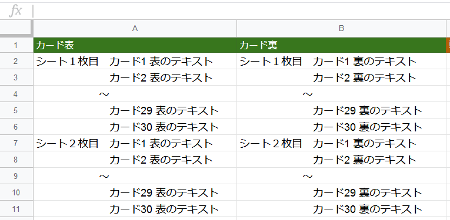

俺のフラッシュカード
使い方
スプレッドシートの例

１．ExcelやGoogle SpreadSheetなどで、フラッシュカードのテキストを用意
※1行目は見出しのため無視されます。
※A列にカードの表の文章、B列にカードの裏の文章を入力します。
２．Ctrl+Aを押して全選択し、Ctrl+Cを押してコピーします。
３．下のテキストエリアでCtrl+Vを押してペーストし、「印刷形式に変換する」ボタンを押す。
４．A4で１枚につき30枚のカードが印刷されます。
印刷形式に変換する